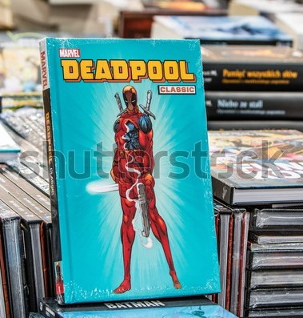
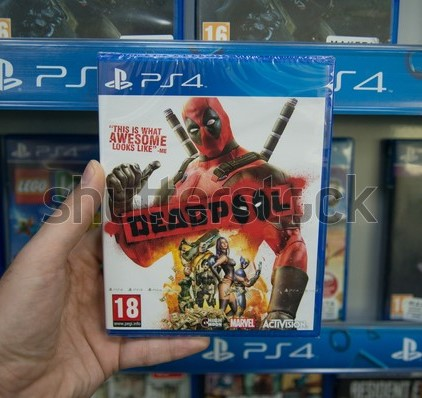
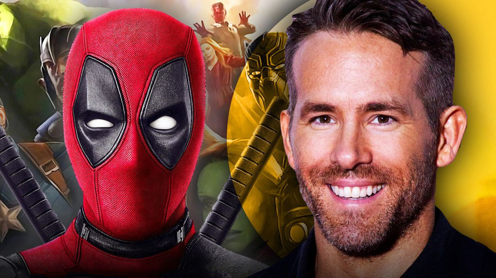

Deadpool Zelf
Over het ontstaan van Deadpool is echter nog niet alles bekend. Marvel staat er namelijk om
bekend, niet
direct een zogenaamde "origin story" van een zijn karakters te maken. Wel zijn enkele grove
verhaal-lijnen
opgezet. Zo zou hij een special-forces training die aansluit op een verleden als huurling. In
zijn leven als
huurling zou terminale kanker zijn geconstateerd. Na deze constatering zou een vrij duistere
organisatie:
het Weapon X programma hem gerecruteerd hebben. Na de ingreep van Weapon X's, dokter Killebrew,
wat Deadpool
ongekend pijn heeft gedaan, zou hij zelfhelend zijn geworden.
Echter zou Deadpool ook nog eens meerdere malen gehersenspoeld zijn tijdens zijn tijd bij Weapon
X. We
spreken hier nog steeds over mogelijke gebeurtenissen omdat zowel de lezer als Deadpool zelf het
niet exact
weten.
Wat wel bekend is dat is de onsterfelijkheid van Deadpool die komt niet van Weapon X maar van de
Marvel
schurk Thanos. Zowel Thanos als Deadpool hebben een liefde voor mistress Death na een ruzie
tussen de twee
zorgt Thanos er voor dat Deadpool niet meer kan sterven. Zodat Deadpool ook mistress Death niet
meer kan
zien.
Wat Deadpool echt anders maakt dan andere Marvel karakters is dat hij zelfbewust is van het feit
dat hij
voorkomt in een fictieve wereld. Waaraan je dit merkt is dat hij zowel in de comic, games als in
de film
opeens het
gesprek met de lezer/gamer/kijker aan gaat over totaal irrelevante onderwerpen.
Wat Deadpool ook bijzonder maakt is dat hij pan-seksueel is, hij kan soms opeens overslaan van
hetro-seksueel naar homo-seksueel.
-

Comics
De Deadpool comics, als eerste verscheen Deadpool als tijdreizende, onsuccesvolle huurling, om Cable (een ander Marvel personage) te vermoorden in 1991. De praatgrage gek was een graag geziene gast in de comics, Marvel zag al snel een relatie tussen de verkoopcijfers en zijn verschijning. Het kon dus ook niet uitblijven dat hij zijn eigen comic-reeks kreeg. Naast zijn eigen comic-reeks zijn ook succesvolle samenwerkingen Deadpool niet vreemd samen met onder andere Wolverine en Spider-man.
-

Games
De Games van Deadpool, op verschillende platforms verschenen maakten Deadpool tussen de verschijning van de comics en de eerste "eigen" film door enorm populair. De exentrieke stem die Deadpool in deze game vertolkt is Nolan North. Hij spreekt de gamer ook regelmatig toe met eigenzinnige wijsheden.
-

Ryan
Ryan Reynolds mocht in 2009 al een keer de rol van Deadpool vertolken in de film "X-Men Origins: Wolverine"(dit betrof echter een bijrol) , al viel deze versie van Deadpool niet zo goed bij de fans. Ryan begon zich in te lezen in het karakter Deadpool en werdt zelf ook fan.
Naar eigen zeggen stuurde hij de productie maatschappij Fox meerdere verzoeken om een solo-movie te doen. Dit werdt meerdere malen afgewezen door de productie maatschappij Fox, toch gaven zij uiteindelijk toe aan proefopnames. Deze proefopnames vielen Fox niet echt in de smaak en wilden het project vroegtijdig afsluiten.
Echter bij toeval belanden de proefopnames op internet en toen was het enthousiasme van de fans niet meer te stuiten. Fox moest over stag en in 2016 kwam Deadpool in zijn eigen film op het grote scherm. Met zo veel succes dat er in 2018 al een succesvol vervolg in de bioscoop uitkwam.
Kijk meer